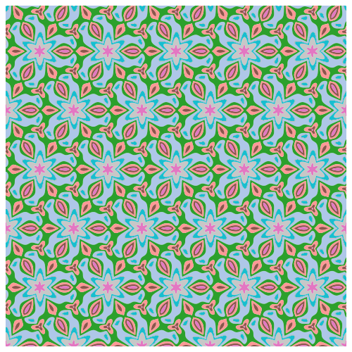

Incorporating symmetry by using an invariant kernel boosts sample efficiency - but by how much?
Taking a fully Bayesian approach to optimisation means incorporating all prior knowledge about our objective function into the optimisation process. Often in the physical sciences we come to the table knowing quite a lot about the shape of the objective, whether that’s from knowledge of the underlying governing equations, physical principles, or geometry of the problem. Our NeurIPS 2024 paper derives new, general guarantees on performance of Bayesian optimisation algorithms that exploit a problem’s invariances.
What is invariance?
For example, in molecular optimisation tasks, we might know that our parameterisation of a molecule is under-specified – that is, that we can represent the same molecule in many different ways.
Let’s say we’ve got 4 ways of parameterising this molecule, A, B, C and D.
Now, given that these all represent the same molecule, the objective function evaluated at A, B, C, and D should have the same value.
This property is known as invariance. Mathematically, a function \(f\) is invariant to some transformation \(\sigma\) if \[ f(\sigma(x)) = f(x), \] or, in words, transforming the input does not change the output.
Note that this is different to the notion of equivariance, a topic that crops up a bunch in deep learning, flow-matching/diffusion models, etc. Equivariance is the relationship “transform input, transform output”, or \[ f(\sigma(x)) = \sigma (f(x)). \] We won’t be considering equivariance in this post (although it is also interesting!).
In our paper, we build on a well-established method to define group-invariant kernels by analysing their performance in BO. A group is a mathematical object that defines some sort of symmetry. We can view the group as defining a collection of transformations, such as reflections, rotations, permutations, etc. Here are some examples of group-invariant functions:



Invariant kernels
If the function we’re modelling exhibits group symmetry, then each point we evaluate gives us additional information about the objective function’s behaviour elsewhere in the domain – information based on all the transformed locations of our original point.
Kernels measure correlation (or shared information) between points. In general, points that are close in space will be closely correlated. For an invariant function, points whose transformed locations are close in space are closely correlated.
To understand this, we fix a point (black), and want to measure its correlation with another point (red). If we don’t factor in the underlying invariance, we can do this by just evaluating the standard kernel, \[ k(x_\mathrm{black}, x_\mathrm{red}). \]
If instead we do take into account the underlying invariance to a group \(G\), we need to capture the fact that the transformed points (white) behave exactly the same as the red point. This means we need an ‘invariant’ kernel, \(k_G\), that satisfies \[ k_G(x_\mathrm{black}, x_\mathrm{red}) = k_G(x_\mathrm{black}, x_\mathrm{white}), \] where \(x_\mathrm{white} \in \{ \sigma(x_\mathrm{red}) : \sigma \in G \}\).
To make a kernel that satisfies this property, we can sum over the kernel values between the black point, the red point, and all transformed versions of each of them. To make sure our kernel is nicely behaved, we normalise by the number of points, making this an average over the transformations: \[ k_G(x, x') = \frac{1}{|G|^2} \sum_{\sigma \in G} \sum_{\sigma' \in G} k(\sigma(x), \sigma'(x')). \] For many common kernels, it turns out we only need to consider the ‘one-sided’ transform,
\[ k_G(x, x') = \frac{1}{|G|} \sum_{\sigma \in G} k(x, \sigma(x')). \]
In our paper, we show that these invariant kernels define a Reproducing Kernel Hilbert Space (function space) containing only \(G\)-invariant functions, and relate the RKHS of \(k_G\) to the RKHS of \(k\).
Armed with a way of defining invariant functions via a kernel, we can now exploit invariance in any kernelised machine learning algorithm - such as Gaussian processes and Bayesian optimisation.
Performance guarantees of invariant BO
While the idea of invariant kernels isn’t new, the novel contribution of our paper is to derive bounds on the sample complexity achieved by BO with these kernels. Sample complexity measures how many observations you need to make, \(T\), in order to achieve a given regret, \(\epsilon\).
As a broad overview, we begin by looking at how the spectral properties of an invariant kernel relate to those of the standard kernel. We find that the symmetrisation process decreases the number of repeated eigenvalues by at least a factor of \(|G|\) – the number of transformations in the group – effectively ‘folding’ the eigenspace according to the group symmetry. This follows through to reduce the maximal information gain of the kernel, a parameter that quantifies how fast a kernelised algorithm learns about the target function (you can think of this as lower maximal information gain = new observations give us less surprising information about the function = we’ve learnt more about the function from our past observations).
Piping this faster maximal information gain through the standard BayesOpt regret analysis gives us an upper bound on the sample complexity achieved by invariant BO algorithms, our key result. For example, for the Matern-\(\nu\) kernel in \(d\) dimensions, we have \[ \mathrm{Vanilla: \quad} T = \tilde{\mathcal{O}} \left(\epsilon^{-\frac{2\nu + d - 1}{2\nu}}\right) \] \[ \mathrm{Invariant: \quad} T = \tilde{\mathcal{O}} \left(\left(\frac{1}{|G|}\right)^\frac{2\nu + d - 1}{2\nu} \epsilon^{-\frac{2\nu + d - 1}{2\nu}}\right) \] Compared to ‘vanilla’ BO, we’ve achieved a reduction in sample complexity by \(\left(\frac{1}{|G|}\right)^\frac{2\nu + d - 1}{2\nu}\)! For completeness, we also come up with an example that gives a lower bound that’s pretty close to (but not perfectly matching - for good theoretical reasons!) the upper bound, showing that this analysis is tight.
We demonstrate this kind of performance in our experiments, with highlights shown below.
We can see that:
- The invariant kernel method achieves huge improvements in sample complexity.
- The improvement increases with increasing dimension and increasing group size.
- Using an invariant kernel actually outperforms constrained optimisation!
This third point might seem surprising, but one intuition for why is that invariant kernel allows information to ‘bleed’ across the boundaries of the symmetry – which constrained BO can’t do.
NeurIPS 2024
There’s a whole lot more to this work that hasn’t gone into the blog post - check out our paper or code for more info with empirical studies looking at misspecification, quasi-invariance, low-cost approximations, comparisons with data augmentation, and more.
We’ve also implemented a general library for group-invariant kernels in GPytorch, so you can use an invariant kernel as a drop-in replacement for your Matern-5/2 in BoTorch or your favourite GP/BO library. Have a look at it on Github and PyPI.
For more info, or to chat about anything BO/symmetry related, come and check out our poster at NeurIPS! We’ll be in the West Ballroom A-D #6003 on Friday 13th, 1100-1400.
– TB